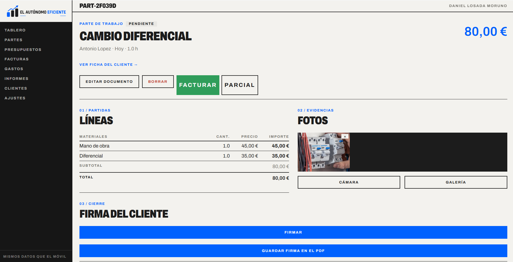
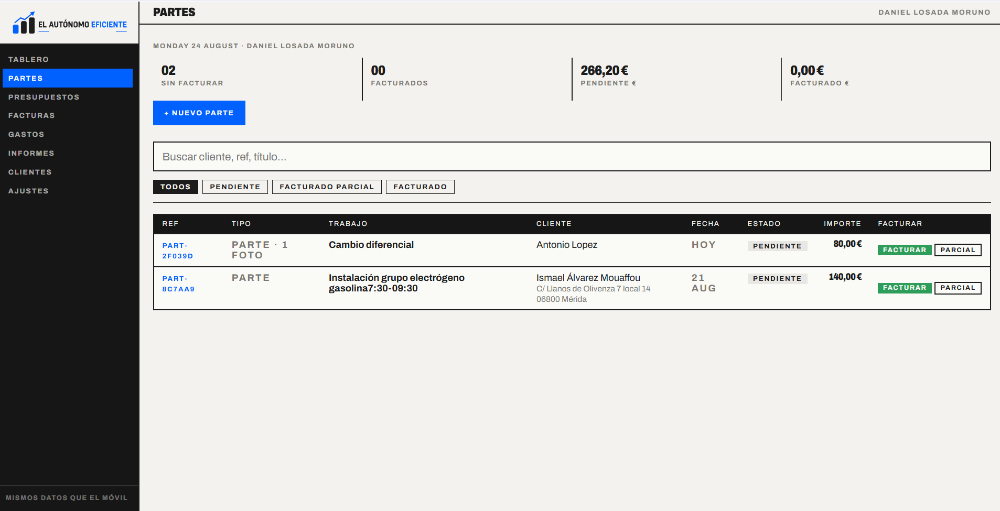
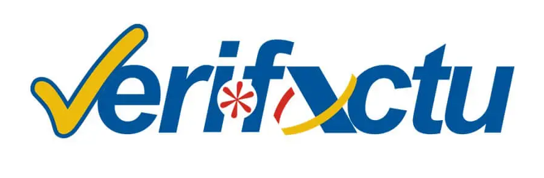
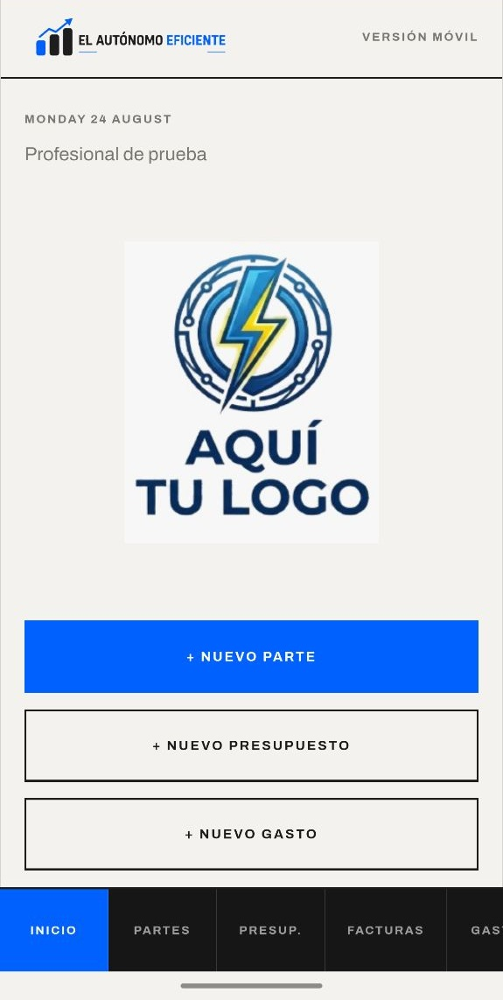
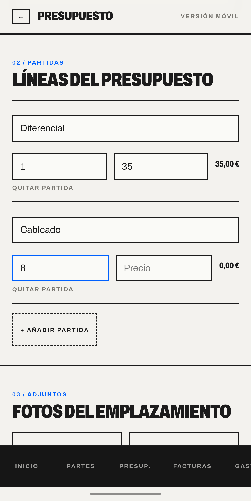
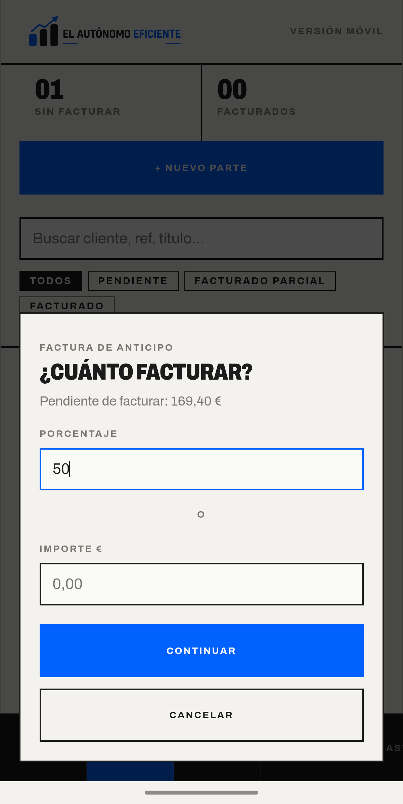
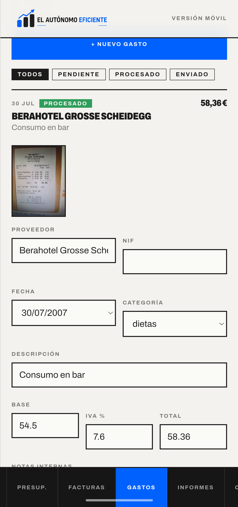
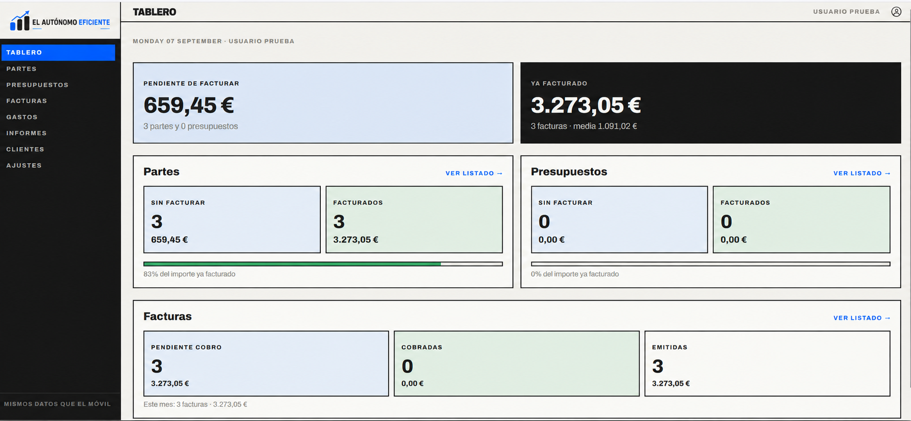
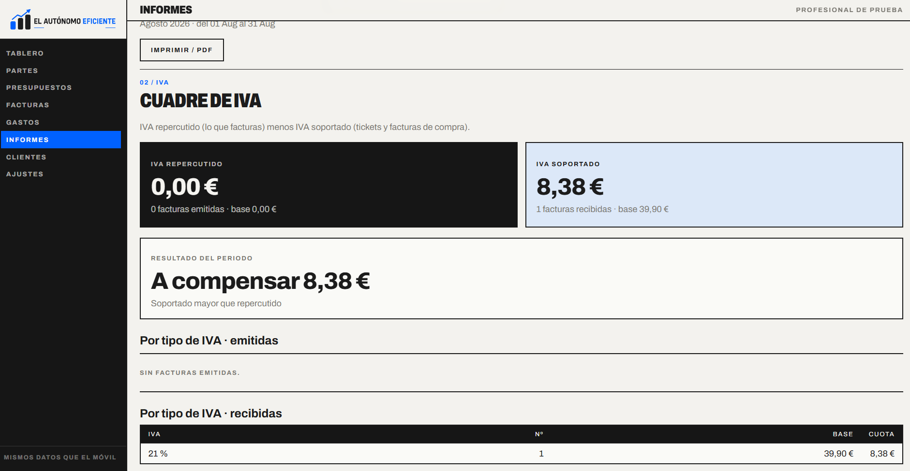

A / EN LA OBRA
CIERRAS EL PARTE CON EL CLIENTE DELANTE.
Horas, materiales, fotos y firma con el dedo. PDF al momento. Las notas internas no las ve el cliente.


Una solución configurada a la medida de tu oficio, tu equipo y tu forma de trabajar. El móvil en el cliente, el ordenador en el taller y el mismo dato hasta la factura VeriFactu y la gestoría.

El trabajo se apunta una vez, donde ocurre.
Desde que llegas a casa del cliente hasta que las facturas de ingresos y gastos llegan a la gestoría.
Horas, materiales, fotos y firma con el dedo. PDF al momento. Las notas internas no las ve el cliente.
Listado de partes y presupuestos: pendiente, facturado parcial o facturado. Factura entero o cobra un anticipo.


La factura de ingreso incorpora su QR y se remite mediante VeriFactu. Para el gasto, fotografías el ticket y la IA rellena importe, IVA, proveedor y fecha. Adaptamos el envío, las series y el circuito documental a la forma de trabajar de tu negocio y tu gestoría.

FACTURACIÓN VERIFICABLE · AEAT





La herramienta se puede personalizar para encajar con el trabajo de cada electricista o instalador: sus datos fiscales, tarifa por hora, IVA, logo, serie de facturación y conexión con su gestoría.
Trabajas en oficios o instalaciones, preparas presupuestos, facturas el trabajo y envías las facturas de ingresos y gastos a la gestoría. No es un ERP, una tienda online ni una «app de productividad».
HECHA A PARTIR DE LA HERRAMIENTA QUE YA USA UN INSTALADOR DE VERDAD: INSTALACIONES LOSADA.
Prueba la solución con tu trabajo real. Después elige el plan que encaje con tu negocio.
AMBOS PLANES SE CONFIGURAN A LA MEDIDA DE TU OFICIO Y TU FORMA DE TRABAJAR.
Solicita acceso a El Autónomo Eficiente. Cuéntanos brevemente cómo trabajas y te enseñaremos la aplicación aplicada a tu negocio.